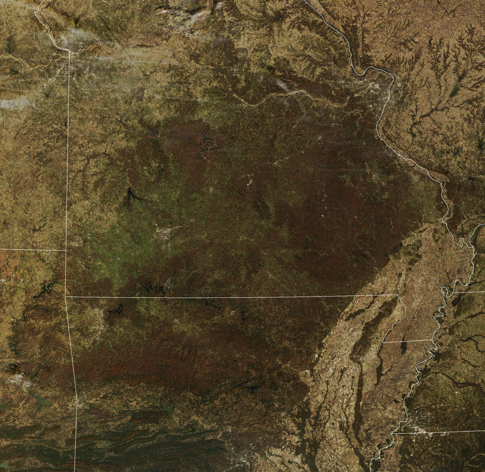

Autumn in the Ozarks
The Ozark Highlands—spanning parts of Missouri, Arkansas, Illinois, and Oklahoma—support remarkable biological diversity, including a range of vegetation that contributes to the region’s vibrant autumn colors. In 2025, a pair of exceptionally cloud-free days allowed satellites to observe the seasonal transformation.
Fall color peaks when air temperatures drop and shortened daylight triggers plants to slow and stop the production of chlorophyll, the molecule that makes leaves appear green and allows plants to synthesize food. As chlorophyll concentrations decline, other leaf pigments—such as carotenoids and anthocyanins—become visible, producing the reds, yellows, and oranges of autumn.
Peak color typically arrives in the Ozark Highlands between mid-October and early November, depending on location. The transformation continues for weeks afterward as shades of brown spread across the landscape. The MODIS (Moderate Resolution Imaging Spectroradiometer) sensor on NASA’s Terra satellite captured images on October 22 and November 16, 2025, before and after peak color, respectively.
Late-autumnal hues arise for several reasons. Some leaves still hold a mix of vibrant pigments: around mid-November in parts of the Missouri Ozarks, white oaks, black oaks, and scarlet oaks retained yellow and red colors. Other areas had already lost leaves or seen colors fade, revealing brown tannins that define a leaf’s final shade. Although less intense than peak foliage, these brown, tan, and gray landscapes offer a distinct autumn beauty.
The highlands also feature scenic roadways that showcase the region’s beauty year-round. To the south in Arkansas, a loop through the Boston Mountains winds over ridges, streams, and valleys. These mountains, spanning Arkansas and Oklahoma, contain the region’s highest elevations, reaching over 2,500 feet (760 meters) above sea level. To the north in Missouri, the Ozark Run Scenic Byway passes through historic towns while traversing the St. Francois Mountains.